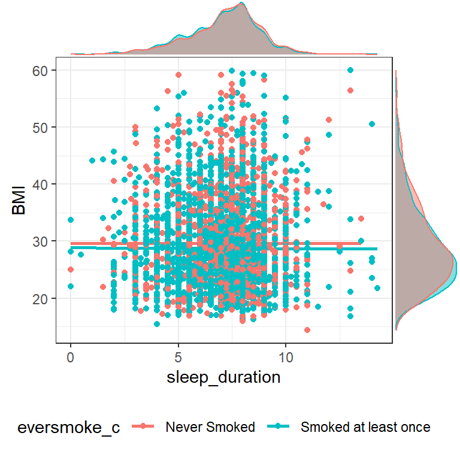
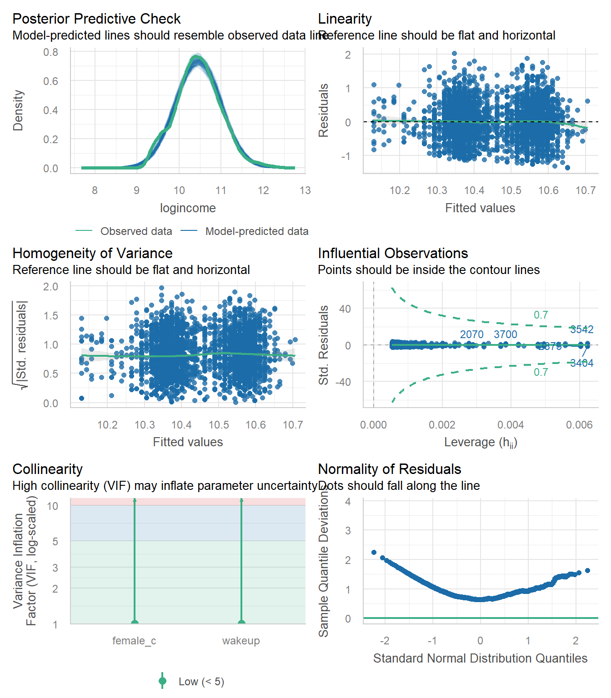

library(gtsummary); library(performance)
library(ggplot2); library(ggExtra)
#load("C:/Users/rdonatello/Box/Data/AddHealth/addhealth_clean.Rdata")
load("C:/Box/Data/AddHealth/addhealth_clean.Rdata")HW 09: Fitting Multiple Regression models
Purpose
Practice fitting and interpreting different types of multiple regression models.
General Instructions
You will perform 4 regression analyses in this assignment. The instructions differ slightly for each model. Review the examples below carefully and follow all steps.
Part 1 - Model fitting & Interpretation
- Define your variables in an English sentence, and in terms of \(x\) variables.
- Specify the levels of your binary and categorical variables, and note which one is the reference group.
- Write the mathematical model.
- Visualize and describe the relationship between your response variable and at least 2 of your predictor variable using appropriate multivariable plots. See ASCN Ch 2 for examples.
- Make a statement whether or not you think a relationship exists.
- Fit the multiple regression model and create a table of estimates, confidence intervals and p-values.
- Interpret ALL regression coefficients (including the intercept) in a sentence that includes a confidence interval and p-value.
- Don’t forget to back-transform your results where appropriate before you interpret.
- Assess model fit
- Examine the residuals for linear models
- Compare the distribution of predicted probabilities against the true class for Logistic regression.
- Model 1 Multiple Linear Regression: \(Y \sim X_{1} + X_{2}\).
- Use at least one quantitative and one binary predictor.
- Model 2 Multiple Linear Regression with a categorical predictor: \(Y \sim X_{1} + X_{2} \ldots X_{p}\).
- Use the same quantitative and binary predictor from #1, but add a categorical predictor.
- Model 3 Regression on a log transformed outcome: \(ln(Y) \sim X_{1} + X_{2}\).
- \(X_{1}\) and \(X_{2}\) can be of any data type.
- Do not interpret the intercept
- Model 4 Logistic Regression: \(logit(Y) \sim X_{1} + X_{2}\).
- Use one quantitative variable, the other can be either binary or categorical.
- When you define your \(x\) and \(y\) variables, also define what \(p\) is.
- Use one quantitative variable, the other can be either binary or categorical.
Part II Model Comparison
- Create a combined regression model table for Model 1 and 2
- Compare these two models using at least two measures of model fit: \(R^{2}_{adj}\), RMSE, AIC, or BIC. Which one would you say fits the data better, and why?
Submission instructions
- Use the template provided: [QMD]
- Right click and ‘save as’, put this in your
scriptsfolder
- Right click and ‘save as’, put this in your
- Upload your rendered PDF to Canvas by the due date.
Part 1 - Model fitting & Interpretation
Model 1 Multiple Linear Regression
1. Define your variables and write the mathematical model.
- Let \(y\) be the quantitative outcome measures of body mass index (variable
BMI) - Let \(x_{1}\) be the quantitative predictor variable that measures the typical amount of time someone sleeps at night (
sleep_duration) - Let \(x_{2}\) be a binary indicator of ever having smoked a cigarette (
eversmoke_c). \(x_{2} = 1\) wheneversmoke_c = "Smoked at least once", and 0 wheneversmoke_c = "Never Smoked"
\[y = \beta_{0} + \beta_{1}x_{1} + \beta_{2}x_{2}\] ### 2. Visualize and describe the relationships. Make a statement whether or not you think a relationship exists.
plot1 <- addhealth %>%
select(sleep_duration, BMI, eversmoke_c) %>% na.omit() %>%
ggplot(aes(x=sleep_duration, y=BMI, color = eversmoke_c)) +
geom_smooth(se=FALSE) + geom_point() +
theme_bw() +
theme(legend.position = "bottom")
ggMarginal(plot1, type = "density",
groupColour = TRUE,
groupFill = TRUE)
The relationship between sleep duration and BMI seems pretty flat, regardless of whether or not someone has ever smoked a cigarette.
3. Fit the model and create a summary table.
model1 <- lm(BMI ~ sleep_duration + eversmoke_c, data=addhealth)
model1 |>
tbl_regression(intercept=TRUE) |>
add_glance_table(include = c(adj.r.squared, nobs))| Characteristic | Beta | 95% CI1 | p-value |
|---|---|---|---|
| (Intercept) | 30 | 29, 31 | <0.001 |
| sleep_duration | -0.06 | -0.18, 0.06 | 0.3 |
| eversmoke_c | |||
| Never Smoked | — | — | |
| Smoked at least once | -0.86 | -1.3, -0.43 | <0.001 |
| Adjusted R² | 0.003 | ||
| No. Obs. | 4,959 | ||
| 1 CI = Confidence Interval | |||
4. Interpret ALL regression coefficients
- \(b_{0}\): For a non-smoker (
eversmoke_c=0) who typically sleeps 0 hours (sleep_duration=0), their predicted average BMI is 30(95% CI 29, 31, p<.001) - \(b_{1}\): Holding smoking status constant, for every additional hour a person sleeps, their predicted average BMI drops by 0.06 (95% CI -0.06, 0.18). This is not a significant association (p = 0.3).
- \(b_{2}\): Controlling for how much sleep someone gets, the predicted average BMI for smoker is 0.86 (95% CI 0.43, 1.3) points lower than for a non-smoker This is a significant difference, p<.001
5. Assess model fit
check_model(model1)
This model fits the data somewhat well. The residuals are not normal, with predicted BMI higher than the observed. The residuals are clustered into two nearly non-overlapping groups seen both in the homogeneity of variance and the linearity diagnostic plots. This is due to the binary smoking status variable, but it doesn’t look like one group has a different pattern than the other. The variance of the residuals looks reasonably constant, and the scatterplot indicated that a linear model wasn’t unreasonable.
Model 2 Multiple Linear Regression with a Categorical Predictor
1. Define your variables and write the mathematical model.
- Let \(y\) be the quantitative outcome measures of body mass index (variable
BMI) - Let \(x_{1}\) be the quantitative predictor variable that measures the typical amount of time someone sleeps at night (
sleep_duration) - Let \(x_{2}\) be a binary indicator of ever having smoked a cigarette (
eversmoke_c). \(x_{2} = 1\) wheneversmoke_c = "Smoked at least once", and 0 wheneversmoke_c = "Never Smoked"
Categorical Predictor: General health (genhealth). 5 Levels: Excellent (reference), Very good, Good, Fair and Poor.
- Let \(x_{3}=1\) when
genhealth='Very good', and 0 otherwise, - let \(x_{4}=1\) when
genhealth='Good', and 0 otherwise, - let \(x_{5}=1\) when
genhealth='Fair', and 0 otherwise, - let \(x_{6}=1\) when
genhealth='Poor', and 0 otherwise.
The reference group for genhealth is Excellent.
The mathematical model would look like:
\[ Y \sim \beta_{0} + \beta_{1}*x_{1} + \beta_{2}x_{2} + \beta_{3}x_{3} + \beta_{4}x_{4} + \beta_{5}x_{5} + \beta_{6}x_{6} \]
2. Visualize and describe the relationships. Make a statement whether or not you think a relationship exists.
addhealth %>%
select(sleep_duration, BMI, eversmoke_c, genhealth) %>% na.omit() %>%
ggplot(aes(x=sleep_duration, y=BMI)) +
geom_smooth() + geom_point() +
theme_bw() +
facet_grid(genhealth~eversmoke_c)The relationship between sleep duration and BMI seems pretty flat, regardless of whether or not someone has ever smoked a cigarette or their general health. Note that the sample size for the combination of those reporting poor health but never have smoked is very small compared to the other groups.
3. Fit the model and create a summary table.
model2 <- lm(BMI ~ sleep_duration + eversmoke_c + genhealth, data=addhealth)
model2 |>
tbl_regression(intercept=TRUE) |>
add_glance_table(include = c(adj.r.squared, nobs))| Characteristic | Beta | 95% CI1 | p-value |
|---|---|---|---|
| (Intercept) | 27 | 26, 28 | <0.001 |
| sleep_duration | -0.02 | -0.13, 0.09 | 0.7 |
| eversmoke_c | |||
| Never Smoked | — | — | |
| Smoked at least once | -1.2 | -1.6, -0.75 | <0.001 |
| genhealth | |||
| Excellent | — | — | |
| Very good | 1.7 | 1.1, 2.2 | <0.001 |
| Good | 4.5 | 3.9, 5.0 | <0.001 |
| Fair | 6.8 | 6.0, 7.6 | <0.001 |
| Poor | 7.5 | 5.5, 9.4 | <0.001 |
| Adjusted R² | 0.085 | ||
| No. Obs. | 4,959 | ||
| 1 CI = Confidence Interval | |||
4. Interpret ALL regression coefficients
- \(b_{0}\): The predicted BMI for individuals who get no sleep, have never smoked and reports excellent health is 27 (95% CI 26, 28).
- \(b_{1}\): After controlling for smoking and health status, for every additional for every additional hour a person sleeps, their predicted average BMI drops by 0.02 (95% CI -0.09, 0.13). This is not a significant association (p = 0.7).
- \(b_{2}\): After controlling for sleep duration and health status, the predicted average BMI for smoker is 1.2 (95% CI 0.75, 1.6) points lower than for a non-smoker This is a significant difference, p<.001
- \(b_{3}\): Those reporting very good health have 1.7 (1.1, 2.2, p<.0001) higher BMI compared to those reporting excellent health.
- \(b_{4}\):Those reporting good health have 4.5 (3.9, 5.0, p<.0001) higher BMI compared to those reporting excellent health.
- \(b_{5}\): Those reporting fair health have 6.8 (6.0, 7.6, p<.0001) higher BMI compared to those reporting excellent health.
- \(b_{6}\): Those reporting poor health have 7.5 (5.5, 9.4, p<.0001) higher BMI compared to those reporting excellent health.
5. Assess model fit
check_model(model2)
This model fits the data a little bit better. The predicted BMI is still higher than the observed, but the variance of the residuals is clearly increasing as the fitted values increase. We also see the same deviation from the reference line in the tails of the qqplot, indicating not strictly non-normal residuals, but lots of outliers on both high end low ends.
Model 3 Log Transformed Response
1. Define your variables and write the mathematical model.
- Let \(y\) be the quantitative outcome measures of annual income (
income). This variable is right skewed, and so has been log-transformed (logincome) - Let \(x_{1}\) be the quantitative predictor variable that measures the time you wake up in the morning using a 24 hour clock(variable
wakeup) - Let \(x_{2}\) be a binary indicator of gender (
female_c). \(x_{2} = 1\) whenfemale_c = "Male", and 0 whenfemale_c = "Female"
\[ln(y) = \beta_{0} + \beta_{1}x_{1} + \beta_{2}x_{2}\]
2. Visualize and describe the relationships. Make a statement whether or not you think a relationship exists.
plot3 <- addhealth %>%
select(wakeup, logincome, female_c) %>% na.omit() %>%
ggplot(aes(x=wakeup, y=logincome, color = female_c)) +
geom_smooth() + geom_point() +
theme_bw() +
theme(legend.position = "bottom")
ggMarginal(plot3, type = "density",
groupColour = TRUE,
groupFill = TRUE)
There appears to be a negative and somewhat linear trend between the time someone wakes up and their income. The trend for males looks slightly different than for females. I also expect that there may be a significant impact of gender on income given how much higher the male trend line is compared to the female trend line.
3. Fit the model and create a summary table.
Note.
tbl_regressiondoesn’t exponentiate the results of a log-linear model very well. So we’re going to manually create a reasonable looking summary table. You should be able to copy/paste this code and input your own model variables.
model3 <- glm(logincome~wakeup + female_c, data=addhealth)
# check sign of coefficients
coef(model3) (Intercept) wakeup female_cFemale
10.73261157 -0.02707776 -0.19671504 # note that they are both negative so we subtract from 1 after exponentiation
# then i multiply by 100 so I can interpret as a percent
pct.chg <- (1-exp(coef(model3)))*100
# extract confidence interval, do the same transformation
ci <- (1-exp(confint(model3)))*100
# extract p-values and apply a formatting
pvals <- broom::tidy(model3)$p.value
# stick them all together into a table
mod3.table <- cbind(pct.chg, ci, pvals)
# display table, drop first row.
knitr::kable(mod3.table[-1,], digits = 3)| pct.chg | 2.5 % | 97.5 % | pvals | |
|---|---|---|---|---|
| wakeup | 2.671 | 3.563 | 1.772 | 0 |
| female_cFemale | 17.858 | 20.574 | 15.048 | 0 |
4. Interpret non-intercept regression coefficients
- For every hour later one wakes up in the morning, one can expect to earn 2.7% (1.8%, 3.6%) lower income than someone who wakes up one hour earlier. This is after controlling for gender.
- Females have on average 17.9% (15%, 20.5%) percent lower income than males, after controlling for the wake up time.
5. Assess model fit
check_model(model3)
The predicted distribution matches the observed data nearly exactly, but the residuals are not normally distributed which is interesting. We see the clustering of the fitted values due to the binary indicator of gender, but otherwise the variance of the residuals is mostly constant. I would say that this model is “okay” but not the best.
Model 4 Logistic Regression
1. Define your variables and write the mathematical model.
- Let \(y\) be a binary indicator for if an individuals reported personal income is below the poverty threshold for the year this data was collected $10,210 (
poverty). - Let \(p\) be the probability that someone is considered to be in poverty
- Let \(x_{1}\) be the quantitative predictor variable that measures the typical amount of time someone sleeps at night (
sleep_duration) - Let \(x_{2}\) be a binary indicator of gender (
female_c). \(x_{2} = 1\) whenfemale_c = "Male", and 0 whenfemale_c = "Female"
\[log\Big(\frac{p}{1-p}\Big) \sim \beta_{0} + \beta_{1}x_{1} + \beta_{1}x_{2}\]
2. Visualize and describe the relationships. Make a statement whether or not you think a relationship exists.
data.for.model4 <- addhealth %>%
select(sleep_duration, poverty, female_c) %>%
mutate(poverty_cat = factor(poverty,
labels = c("Under poverty line", "Over poverty line"))) %>%
na.omit()
ggpubr::ggdensity(data.for.model4, x = "sleep_duration",
fill = "poverty", facet.by = "female_c")The distribution of sleep duration seems to be shifted slightly higher for those living over the poverty line compared to those living under, and does not seem to differ depending on gender.
3. Fit the model and create a summary table.
model4 <- glm(poverty~sleep_duration + female_c,
data=data.for.model4, family='binomial')
tbl_regression(model4, exponentiate = TRUE, intercept = TRUE)| Characteristic | OR1 | 95% CI1 | p-value |
|---|---|---|---|
| (Intercept) | 0.15 | 0.11, 0.20 | <0.001 |
| sleep_duration | 1.01 | 0.97, 1.05 | 0.7 |
| female_c | |||
| Male | — | — | |
| Female | 2.25 | 1.94, 2.62 | <0.001 |
| 1 OR = Odds Ratio, CI = Confidence Interval | |||
4. Interpret ALL regression coefficients
- \(b_{0}\): The predicted probability for a male who sleeps 0 hours on average to be earning below the poverty line is 0.15 (0.11, 0.20).
- \(b_{1}\): After controlling for gender, every additional hour someone sleeps is associated with 1.01 (0.97, 1.05) times the odds of living under the poverty level. This is a non-significant difference p=.07.
- \(b_{2}\): After controlling for sleep duration, females have 2.25 (1.94, 2.62) time the odds of reporting annual earned wages below the federal poverty level compared to males.
5. Assess model fit
Ref ASCN 12.2.1 for explanation of this code.
# Calculate predicted probabilities
p.hat <- predict(model4, type='response')
# combine these predictions onto the data used for the model
## note these have to have the same dimension. If you have missing
## data you will need to use model4$model as the data
model.pred.data <- cbind(data.for.model4, p.hat)
ggplot(model.pred.data, aes(x=poverty_cat, y=p.hat, fill=poverty_cat)) +
geom_violin(alpha=.4) + geom_jitter(alpha =.5, width=.2) +
scale_fill_viridis_d(guide=FALSE)
The model predicted probability of living in poverty is on the y-axis, and the true outcome category is on the x. There does not seem to be a clear separation of outcome category based on predicted probability.
More of the responses with low predicted probabilities tend to correspond to records that are reported to be under the poverty line. However, there seems to be a very similar amount of individuals in each outcome category with similar predicted probability of around 0.25.
model_performance(model4, metrics = "PCP")# Indices of model performance
PCP
-----
0.682Regardless, this model does better in predicting whether or not someone reports income below the poverty line than a simple flip of a fair coin. The percent of correct predictions for this model is 68.2%.
Part II Model Comparison
# set some nice themes
theme_gtsummary_journal(journal = "jama")
theme_gtsummary_compact()
tbl1 <- model1 |>
tbl_regression(intercept=TRUE) |>
add_glance_table(include = c(adj.r.squared, sigma, AIC, BIC, nobs))
tbl2 <- model2 |>
tbl_regression(intercept=TRUE) |>
add_glance_table(include = c(adj.r.squared, sigma, AIC, BIC, nobs))
tbl_merge(
tbls = list(tbl1, tbl2),
tab_spanner = c("**Model 1**", "**Model 2**")) |>
modify_table_body(~.x |>
dplyr::arrange(row_type == "glance_statistic"))| Characteristic | Model 1 | Model 2 | ||
|---|---|---|---|---|
| Beta (95% CI)1 | p-value | Beta (95% CI)1 | p-value | |
| (Intercept) | 30 (29 to 31) | <0.001 | 27 (26 to 28) | <0.001 |
| sleep_duration | -0.06 (-0.18 to 0.06) | 0.32 | -0.02 (-0.13 to 0.09) | 0.75 |
| eversmoke_c | ||||
| Never Smoked | — | — | ||
| Smoked at least once | -0.86 (-1.3 to -0.43) | <0.001 | -1.2 (-1.6 to -0.75) | <0.001 |
| genhealth | ||||
| Excellent | — | |||
| Very good | 1.7 (1.1 to 2.2) | <0.001 | ||
| Good | 4.5 (3.9 to 5.0) | <0.001 | ||
| Fair | 6.8 (6.0 to 7.6) | <0.001 | ||
| Poor | 7.5 (5.5 to 9.4) | <0.001 | ||
| Adjusted R² | 0.003 | 0.085 | ||
| Sigma | 7.27 | 6.96 | ||
| AIC | 33,749 | 33,326 | ||
| BIC | 33,775 | 33,378 | ||
| No. Obs. | 4,959 | 4,959 | ||
| 1 CI = Confidence Interval | ||||
The model with the categorical variable of general health added in (Model 2) is a better model to use than Model 1 for several reasons.
- The adjusted \(R^2\) is a lot higher, 0.085 vs .003
- The residual (unexplained) variance of model 2 is lower, (6.96 vs 7.27)
- Both the AIC and BIC are lower.